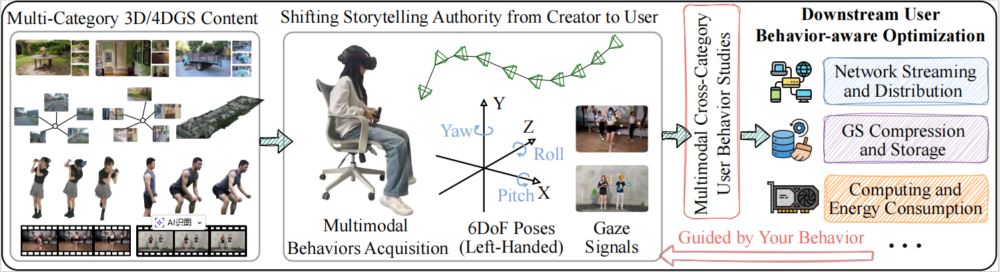

Figure 1: Illustration of downstream services and applications guided by multimodal cross-category user behavior analysis.
The recently emerging 3D/4D Gaussian Splatting (GS) has demonstrated transformative potential in enabling photorealistic virtualization of the physical world. To bridge the gap in large-scale user behavior datasets for GS content, we present GSpark. As the first large-scale multimodal user-behavior dataset, GSpark covers a diverse range of 3DGS and 4DGS content. We collected 6DoF motion and gaze signals from participants interacting with high-fidelity GS scenes, categorized into four types: garden-scale static, large-scale static, dynamic human avatars, and dynamic full-scenes.
| Dataset | Static 3DGS | Dynamic 4DGS | User Behaviors | |||
|---|---|---|---|---|---|---|
| Garden-scale | Large-scale | Human | Full-scene | 6DoF | Gaze | |
| EyeNavGS [4] | ✓ | - | - | - | ✓ | ✓ |
| ViewGauss [29] | ✓ | - | ✓ | - | ✓ | - |
| GSpark (Ours) | ✓ | ✓ | ✓ | ✓ | ✓ | ✓ |
The GSpark dataset is available via Google Drive for academic research purposes.
Download from Google DriveNote: If you encounter any access issues, please ensure you are logged into your Google account or contact the project maintainers.
@inproceedings{anonymous2026guided,
title={Guided by Your Behavior: A Multimodal User-Behavior Dataset for Photorealistic Static and Dynamic Gaussian Splat Viewing},
author={Anonymous Author(s)},
booktitle={Proceedings of ACM Multimedia},
year={2026}
}